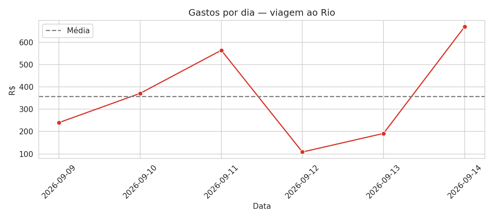
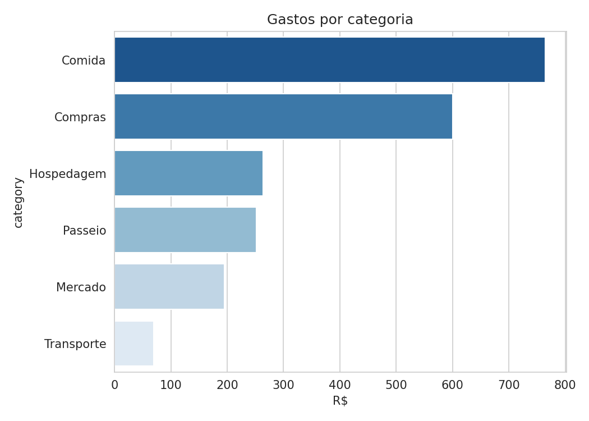
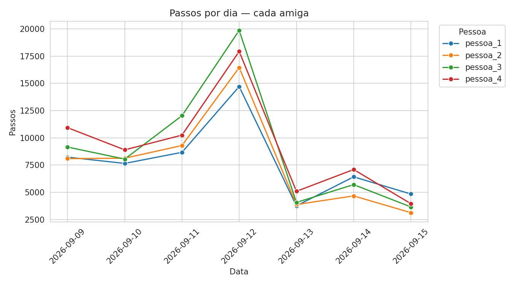
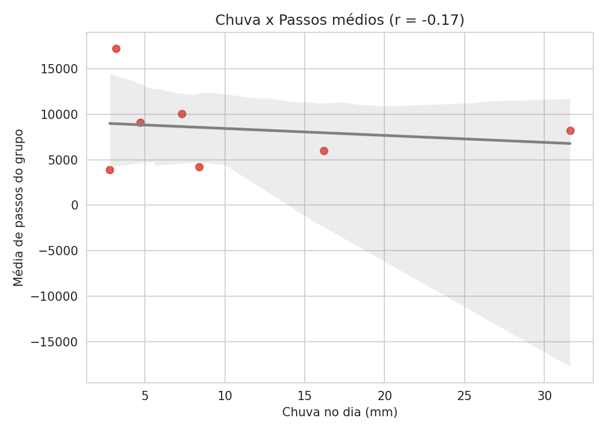
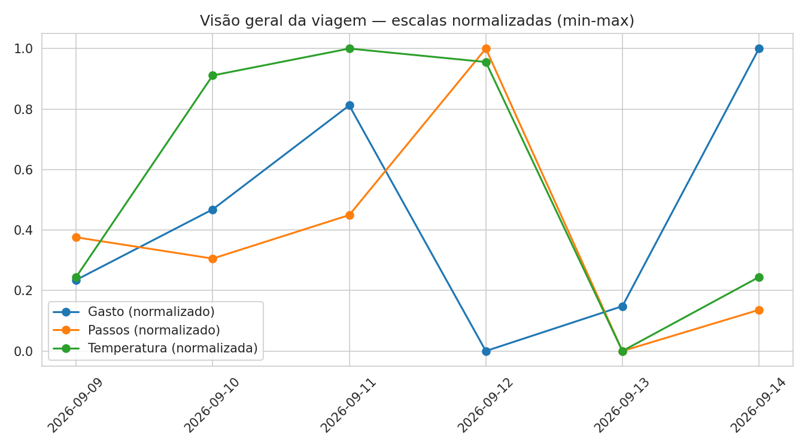

Depois de voltar, transformei a viagem em uma pequena análise de dados — gastos, passos e clima, com Python e pandas.
Ver o notebook completo no GitHub →
O gasto teve dois picos: o dia do Rock in Rio (compras + comida do evento) e o dia 14 (hospedagem + mercado).

Comida foi a maior categoria de gasto, seguida de compras.

As 4 pessoas seguem quase o mesmo padrão de passos ao longo da semana — sugere que o roteiro em grupo influenciou mais o nível de atividade do que o perfil individual.

Correlação fraca (r ≈ -0.17) entre chuva e passos médios — com apenas 7 dias, o resultado é ilustrativo, não estatisticamente conclusivo.
Mapa de calor dos lugares do roteiro.

Gasto, passos e temperatura, todos numa escala de 0 a 1, sobrepostos — dá pra ver visualmente se andaram juntos em algum ponto da viagem.